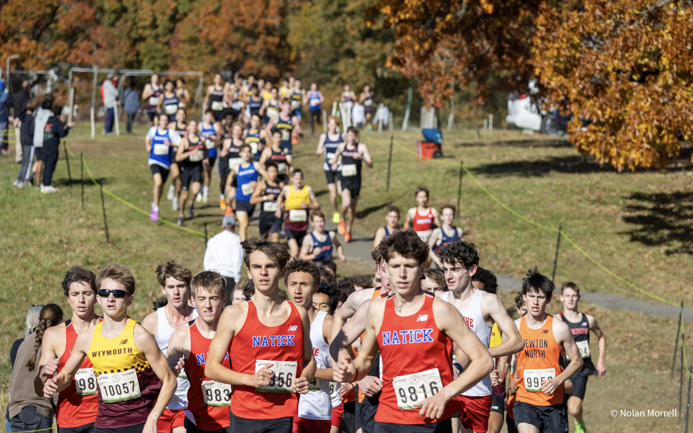

Week 8 Power Rankings
Guess who’s back at the top? Brookline reclaims #1 as the postseason approaches.

Guess Who’s Back at the Top?
#1 Brookline
Brookline reclaims its #1 spot in the rankings after putting on a dominant performance at the Bay State Conference Championship. The team’s move is mainly highlighted by three of its top seven runners.
Ibrahim Abdel-Dayem won the race in a blistering time of 15:23. He beat key runners like Liam Hartmann and Ryan Costello, which is quite the accomplishment. This performance moves Abdel-Dayem to the #2 seed for the D1A race and MA #7 for 5K.
Elias Thomasson also had a great day, placing sixth overall. He ran a new PR of 15:58 to beat out a stacked field of runners. Though it’s important to note the big gap between him and fifth place, so there’s a good chance Thomasson can actually run faster.
Lastly, Brookline’s talented freshman finally got promoted to the varsity lineup. Kieran Morrissey-Dhenke had a great day, running his first all-out 5K in 16:11. With this time, he placed 12th overall in one of the most competitive conferences in the state and rounded out Brookline’s squad as its #5 runner.
With Brookline gaining so much momentum, the Warriors will be hard to stop entering the postseason. Although Cambridge still looks to be the favorite on paper, we believe this Brookline team is finally ready to challenge them.
#3 St. John’s Prep
Although they were beaten by BC High early last week, we still think Prep has the better overall team. They had an off day last week, but they’ve still shown that they can compete with the best of the best.
The reason for their move up is mainly due to Henry McDonnell, who placed sixth overall at the Catholic Conference Championship and improved his season best by over 30 seconds. Sam Valentine, Prep’s #5 runner, also recorded a season best last week.
St. John’s Prep now enters the postseason with four runners under 16:00 and its fifth runner at 16:30. We’re excited to see how this team matches up against BC High and the other teams on this list as we enter the postseason.
Yes, we have Prep at #3, but the gap between them and #7 North Andover is extremely tight in terms of talent.
#4 BC High
Easily the biggest comeback of the season has to come from BC High.
When this team looked to be at full strength at the beginning of September, we had them ranked #4. Then we found out they were missing Owen Geagan, which caused us to move them down to #9. It then seemed as though something was wrong with Colin Kurtz, leading us to drop them all the way to #20.
Now, after getting Kurtz back and seeing their runners take big steps forward, they’re already back at #4, still without Geagan.
BC High moves up five spots this week after upsetting St. John’s Prep at the Catholic Conference Championship, 44–48.
Even coming off an injury, Colin Kurtz still managed to win the race in 15:24. Joseph Hayes followed with a PR of 15:54 to finish fifth overall.
After that, the team’s depth was on full display.
Braeden Donovan (16:06) ran a massive 62-second PR, Theo Weiss (16:15) recorded a 25-second season best despite dealing with injury, Cooper Wilson (16:18) ran a 47-second PR, and Nolan Kurtz (16:23) rounded out the squad with a 23-second PR.
All six of these runners finished inside the top 15, which heavily contributed to their victory. Watch out for BC High in the postseason, as this team looks to be making some serious moves.
#5 Lexington
Lexington moves up another spot after a dominant performance at the Middlesex League Championship.
Despite racing on a harder course, Lexington still swept the podium with an impressive trio up front. Patrick Noonan won the race in 15:36, followed by Trevor Stevens in 15:48 and Alden Hall in 15:52.
Rhys Behlings, still coming off injury, ran 16:26, while Benjamin Sbihli rounded out the scoring five in 16:42.
Though we’d still keep an eye on Andrew Zhang. He’s also coming off injury and is someone you can expect to play a big role for the squad heading into November.
#8 Hopedale
Hopedale moves up another two spots in the rankings this week after once again dominating Parker Charter at the CMAC Championship.
Even on the difficult Fort Devens course, Hopedale still ran some impressive times. Quinn Cook took the overall win in 15:39, beating Parker Charter’s Jett Johnson by seven seconds.
Ben Stone then had a great day, running 16:13 to place third overall. Stone’s performance suggests he might be capable of breaking the 16:00 barrier on a faster course.
After that, Connor Fitzgibbon (16:31) and Cedric Arthur (16:34) placed fifth and sixth overall. Arthur specifically seems to have taken an even bigger jump in his training, significantly closing the gap between himself and Fitzgibbon.
Jack Murphy rounded out the squad in 17:17.
With this victory, Hopedale cements itself as the team to beat in Division 3. Can any team in the division even challenge them?
#10 Weston
Weston had a big day this past Friday, beating DCL rival Concord-Carlisle. Although the C-C squad wasn’t at its best, Weston still pulled out an impressive win.
The biggest reason for their move up was Matthew Fitzgibbon, who looks to be back at full strength. Fitzgibbon finished eighth overall on the harsh terrain of Franklin Park in 16:03, suggesting he could run much faster on an easier course.
Aarav Mehta also looks to be getting back into form quite nicely, placing ninth overall in the Foley division with a time of 17:14.
With Mehta and Fitzgibbon getting back to full strength, Weston is looking stronger than ever and moves up as a top contender in Division 2.
#12 Xaverian
Xaverian takes a big jump in the rankings this week despite missing two of its top seven runners. The Hawks move up six spots from #18.
Jack Weintraub had a big race at the Catholic Conference Championship, placing second overall in 15:28. This time moves Weintraub to the #1 seed for D1B.
Marco Petrino (15:58) and Alex Armstrong (15:58) followed that up with two more impressive performances of their own. Petrino placed seventh overall with a massive 50-second PR, while Armstrong finished ninth with a 36-second PR.
Anders Hallman then ran a PR of 16:37, while Luke Herman stepped up into the #5 role to run a PR of 16:57, placing 25th overall.
Even without some of their top runners, Xaverian should be a force to be reckoned with in D1B.
#17 Oliver Ames
Oliver Ames gains another two spots in the rankings, slowly closing the gap on Reading Memorial. This team dominated the Hockomock League Championship last weekend with several impressive performances.
Corey Yifru placed second overall in a blistering time of 15:55. Even while sick, Devon McStowe finished third overall, right behind Yifru in 15:57.
It’s important to note that McStowe also went out a bit harder than Yifru, so we’d say he can definitely run a good amount faster.
Peter Feodoroff then had a very impressive performance, placing seventh overall in 16:19, while Nico Colvin rounded out the squad with a PR of 16:55.
Watch out for Oliver Ames, especially since this team knows how to perform in the postseason.
#19 Billerica Memorial
Billerica gains another spot after making some big improvements in its back-end talent.
Max Gorski ran a very impressive race, placing 18th overall at the MVC Championship in 16:33.
Although Dylan Kane didn’t race, it’s a safe assumption that he can run right alongside Gorski, as the two have been at a similar level all season.
Hayden Headley (17:18) and Shaunak Kulkarni (17:24) rounded out the Billerica squad.
There’s only one more league championship left, taking place next weekend out in Western Massachusetts. Be on the lookout for #14 Longmeadow, as well as Amherst-Pelham and Northampton, as these teams could shake up the rankings even more heading into the postseason.